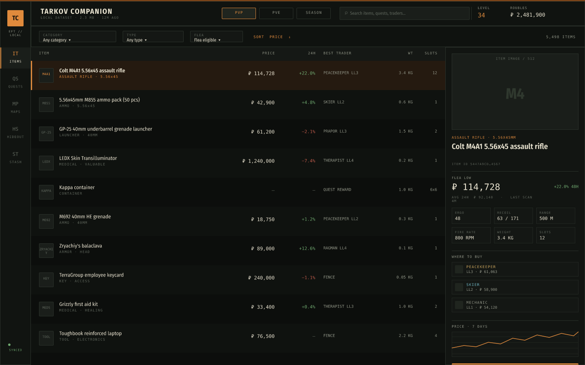
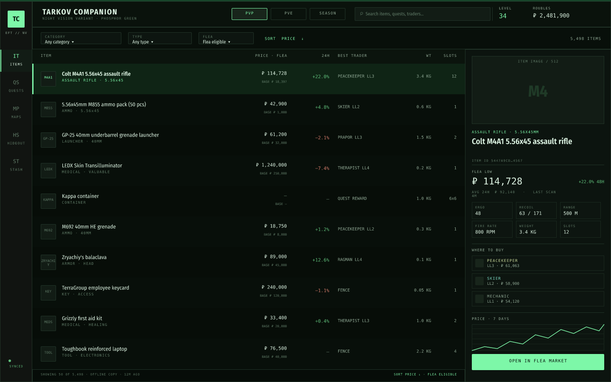

Database for Tarkov density and hierarchy, with Tarkov Tracker's olive palette, monospace stats and
confirmed-progress language. Concept only — the Linux app currently uses plain Material widgets.
Void#0C0E0C
Surface#141714
Surface 2#1A1E1A
Border#2C332C
Bone#E8E2CF
Orange#E08A3C
Green#6FA96F
Red#C05A4A

01 · Desktop · Items 1440 × 900

01b · Items · Night Vision 1440 Chosen direction · phosphor